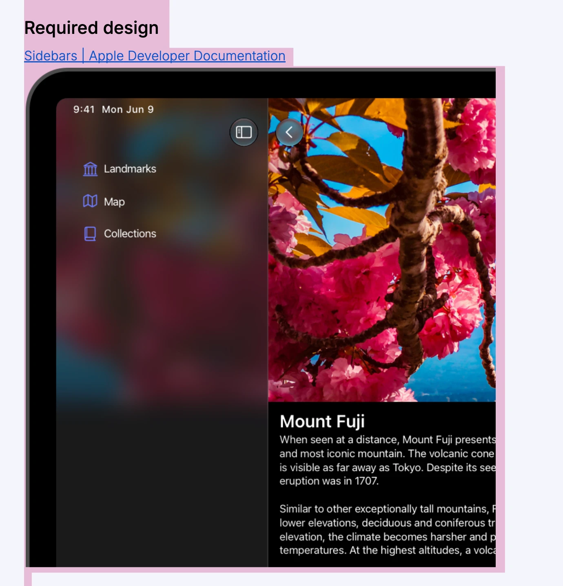
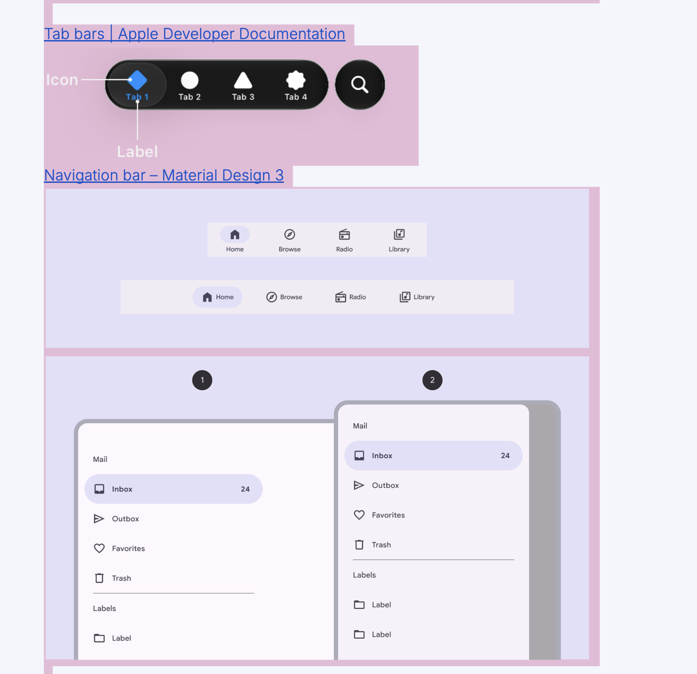

Deliverables
Two sets of navigation, each a tone. Each set is one prototype: a vertical sidebar that expands and collapses and a horizontal tab bar, both in use, then every state, then the spec.
Brief
Two sets of navigation, each expressing a tone. Tones can repeat. Every design has to do its job. Each one gets a drawing and a working prototype.
Tone is the soft attribute: the personality, the associations, the attitude. Function is the hard one: what the navigation is for and what it lets you do. Navigation's function is to show where you are, where else you can go, and to take you there in one move. So the tone has to live in the surface, the marks and the way an item answers the pointer, while the current place still reads at a glance.
Each set has two kinds of navigation, built on one structure.
Two kinds
| Kind | Also called | Has to |
|---|---|---|
| Vertical | Navigation rail, navigation drawer, sidebar | Expand and collapse |
| Horizontal | Tab bar, navigation bar | Hold the top destinations in one row |
What the structure has to take
| Part | Has to support |
|---|---|
| Icon and text | Every item has an icon with its label |
| Category headers | A heading over a group of items |
| Trailing slot | A place on the right of an item that holds a badge, an icon or text |
States
| Shows | |
|---|---|
| Enabled | The item at rest, ready to go to |
| Hover | The item under the pointer, about to be picked |
| Pressed | The press landing |
| Selected | The place you are now |
The brief shows three references. Apple's sidebar on iPad: a frosted panel over a blurred photo, a round toggle at its top right, and three rows of a tinted icon with a label (Landmarks, Map, Collections) beside a Mount Fuji article. Apple's tab bar: a dark floating capsule of four tabs, icon over label, the picked one lifted in its own lighter pill and tinted blue, and a separate round search button beside it. Material's navigation bar in two widths, icon over label and icon beside label, the picked item held in a soft pill; and the navigation drawer, with a Mail header, an Inbox row picked in a full-width pill with a count of 24 on its right, a divider and a Labels header.


The spec
As before, no Figma file: every prototype carries its own spec in a section of the page. At least spacing, font, font size and line height, the size of the sidebar (expanded and collapsed), the tab bar and each item, and every other property that shapes them: roundness, stroke width, icon size, the selected indicator, the badge. The numbers are read from the values the prototype runs on, so the spec cannot drift from the design.
Research
What navigation is and how it behaves, from Apple's Sidebars and Tab bars, Material 3's navigation bar, rail and drawer, and three desktop systems (Microsoft Fluent, IBM Carbon, GitHub Primer). Nothing about tone yet, only the navigation. The full report, with every source, is in the research report.
One thing to know first: the two guides speak differently. Material publishes every number. Apple's iOS 26 pages dropped their size tables and now describe behaviour (a floating glass bar, a bar that shrinks on scroll); the old sizes survive only in 2024 copies. Where a number below is Apple's, it says which.
The parts
A sidebar is a list of places, grouped under headers. Each place is one row: an icon, a label, and a slot on the right. The row you are on is held in a pill.
- ContainerThe panel; Material's drawer is 360 wide, the expanded rail 220–360
- Category headerNames a group; muted, never pressable. Material: Title small
- Active indicatorThe pill behind the place you are; 56 tall, 12 in from each side
- Icon24; tinted when picked. Apple prefers filled symbols
- LabelOne or two words; the place's name
- Trailing slotA badge, an icon or text: counts, a new mark, a link out
- DividerOptional; space or a hairline between groups
Two directions, one list
The same places, laid out three ways depending on room. Wide windows get the sidebar; it collapses to a rail of icons; on a phone the list turns into a bar across the bottom. Headers only fit in the widest one.
Icon and label side by side, headers, trailing slots. Material: expanded rail or drawer, 220–360 wide. Fluent shows it at 1008 px and wider.
Icons alone (or icon over a small label). Material: 96 wide (80 before Expressive), up to 7 places. Headers become space; counts become a dot.
Icon over label, across the bottom. Material: 80 tall (64 in Expressive), 3–5 places, the icon held in a 56 × 32 pill.
iOS 26: the bar floats over content on Liquid Glass and shrinks while you scroll down. Search can sit apart as its own round button at the end.
On windows 600 and wider, Material Expressive turns each item sideways: icon beside label in a 40 tall pill. Apple does the same in regular width.
Apple's iPad tab view can turn into a sidebar and back; Material swaps bar, rail and drawer by window width. Same places, same order.
The slot on the right
The brief asks for a slot at the end of each row that holds one of three things. Primer splits them by job: something to read (a count, an icon that says where the link goes) or something to press (an action, which then needs its own name).
Something new or waiting. Material: a 6 dot, or a 16 tall badge with a number, in the error colour. Apple keeps the red badge for what really matters.
Says where the row goes or what it holds: a link out of the app, a lock, a pin. If pressing the icon does something of its own, it is a button with its own label.
A plain count or a short word, in the muted colour: Material's drawer puts Inbox's 24 here in the label's own size (Label large).
Try it
A sidebar and a tab bar that hold the same places. Collapse the sidebar, change what the slot holds, pick a place in either and watch the other follow.
- ⇥TabMoves through the places one by one: they are links, not a menu
- ⏎EnterGoes there; the picked one is marked
aria-current="page" - ◫ToggleThe round button at the top folds the sidebar; it says
aria-expanded
Three choices in it, taken from the research. Collapsed, a place keeps its name for the pointer (a tooltip) and the screen reader, since NN/g found icons alone rarely speak for themselves. The tab bar has no room on the right, so the slot moves onto the icon's corner as a badge, the way both Apple and Material do it. The width eases open on Material's default spatial spring (damping 0.8, stiffness 380, about 500 ms) while the labels fade on the faster effects spring, so the words are gone before the panel narrows past them.
Four states
The same ladder as last week's buttons, on a row: a faint layer of the ink colour for hover and press, and selected is not a layer but the pill, which stays.
Carbon, IBM's system, adds a 4 px bar on the left edge of the selected row, so the place reads even without colour. Material's state layers sit only on the pill area, not the whole row width, in the bar and rail. Apple asks that tabs are never disabled or hidden: a place you can't go to yet should still open and explain why.
How it moves
Two schools. Material moves on springs, named by what they move: spatial ones for position and size (they may overshoot a little), effects ones for colour and opacity (never overshoot). Carbon moves its rail on a short curve: 110 ms and the labels simply appear.
| What moves | Material 3 Expressive | Settles in about |
|---|---|---|
| Rail widens and narrows | Default spatial spring, damping 0.8, stiffness 380 | 500 ms |
| Picked pill grows in from its centre | Fast spatial spring, 0.6 / 800 (a small bounce) | 420 ms |
| Colour, label fade | Default effects spring, 1.0 / 1600 (no bounce) | 290 ms |
| Modal drawer opens / closes | Opens on default spatial, closes on fast effects | — |
| Carbon rail (for contrast) | width .11s cubic-bezier(.2, 0, 1, .9) | 110 ms |
Note that Material's pill does not slide from the old place to the new one; it fades and grows where you tapped, so the eye lands on the new place, not on the trip. Settle times are from sampling each spring with a mass of 1; the springs themselves are Google's.
Laws of UX that shape navigation
More choices, longer to decide. Keep the top level short (3–5 in a bar, about 7 in a rail) and push the rest down a level.
Big, near targets are faster. Whole rows are the target, not just the label; screen edges help. At least 24 px (WCAG), 44 pt (Apple), 48 (Material).
People expect your app to work like the others they use. Sidebar on the left, bar at the bottom of a phone, the picked place visibly marked.
A long list reads as a few short ones once headers and space split it. Things inside one boundary feel like one group.
The first and last items are remembered best. Put the most-used place first and a key one last; Apple warns against burying critical items at a sidebar's bottom edge.
The one that differs is the one remembered. Only the selected place gets the strong mark; badges stay rare so they still stand out.
And one finding to weigh against collapsing: NN/g's study of 179 people found hidden navigation was used about half as often as visible navigation on desktop (27% against 48%), and tasks took at least 39% longer. A collapsed rail is a cost the design has to earn.
Accessibility
| Question | Answer |
|---|---|
| What is a sidebar, in code? | A <nav> of links. The current one carries aria-current="page". Tab moves between them. Not a menu. |
| And a tab bar? | If it moves to another page, the same: links in a <nav>. Only if it swaps a panel in place is it a tablist with aria-selected and arrow keys. |
| The collapse button? | A disclosure: aria-expanded and aria-controls pointing at the sidebar. |
| Collapsed, icons only? | Every item keeps a name for the screen reader and a tooltip for the pointer. |
| Selected look? | Not by colour alone: a pill, a bar or a weight change, at 3:1 against its background. |
| Motion? | Under reduced motion, snap instead of spring. |
Numbers to remember
Do and don't
Process
Ideation
Loose sketches, each running live in its box.